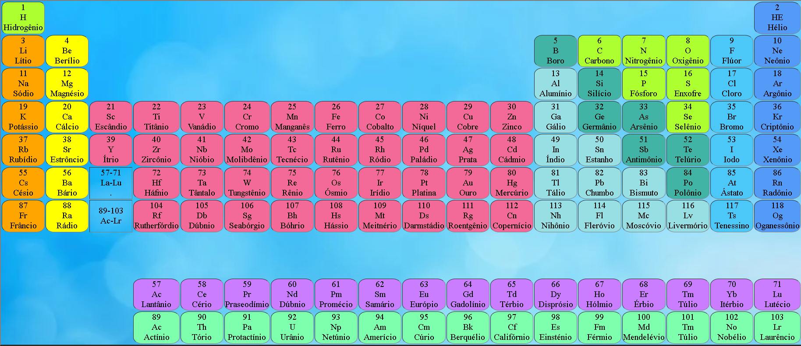

01 / WEB
↗
Site de pizzaria
Projeto acadêmico de website para uma pizzaria, trabalhando a estrutura das páginas e a apresentação do conteúdo.
HTMLCSS
BELO HORIZONTE, BRASIL · 2026
Desenvolvedor de sistemas
Trabalho com desenvolvimento de aplicações, integração de APIs e suporte técnico. Gosto de entender o problema antes de começar a escrever código.
Sou técnico em Informática formado pelo Colégio Cotemig. Tive experiência prática com desenvolvimento de sistemas e suporte técnico de segundo nível, trabalhando com manutenção de aplicações, APIs e análise de problemas.
Tenho interesse em continuar evoluindo como desenvolvedor, aprender novas ferramentas e participar de projetos em que eu possa contribuir de verdade. Para mim, escrever código também é entender o contexto, testar possibilidades e cuidar dos detalhes.
EXPERIÊNCIA ANTERIOR · ESTÁGIO
Desenvolvedor de Sistemas e Suporte Nível 2
Na Area Code, tive contato com a rotina de desenvolvimento e sustentação de sistemas. Atuei na manutenção de funcionalidades, integração entre serviços e investigação de questões técnicas do dia a dia.
Projetos de estudo e exercícios práticos que fazem parte da minha trajetória.
Projeto acadêmico de website para uma pizzaria, trabalhando a estrutura das páginas e a apresentação do conteúdo.

Exercício de interface para organizar e exibir imagens em uma página web.

Página de consulta com informações organizadas em uma representação visual da tabela periódica.
Protótipo acadêmico com formulários, manipulação do DOM e armazenamento local no navegador. Não utiliza autenticação em servidor.
Outros códigos e estudos github.com/Augustomc65 ↗
C# · .NET · APIs REST · HTML · CSS · JavaScript · Angular
SQL · MySQL · JSON · Swagger
Suporte Nível 2 · Redes · Hardware · Cibersegurança
Network Defense · Introduction to Cybersecurity · Computer Hardware Basics · Introduction to Data Science · Introduction to IoT · Digital Awareness
Belo Horizonte, Minas Gerais · Brasil